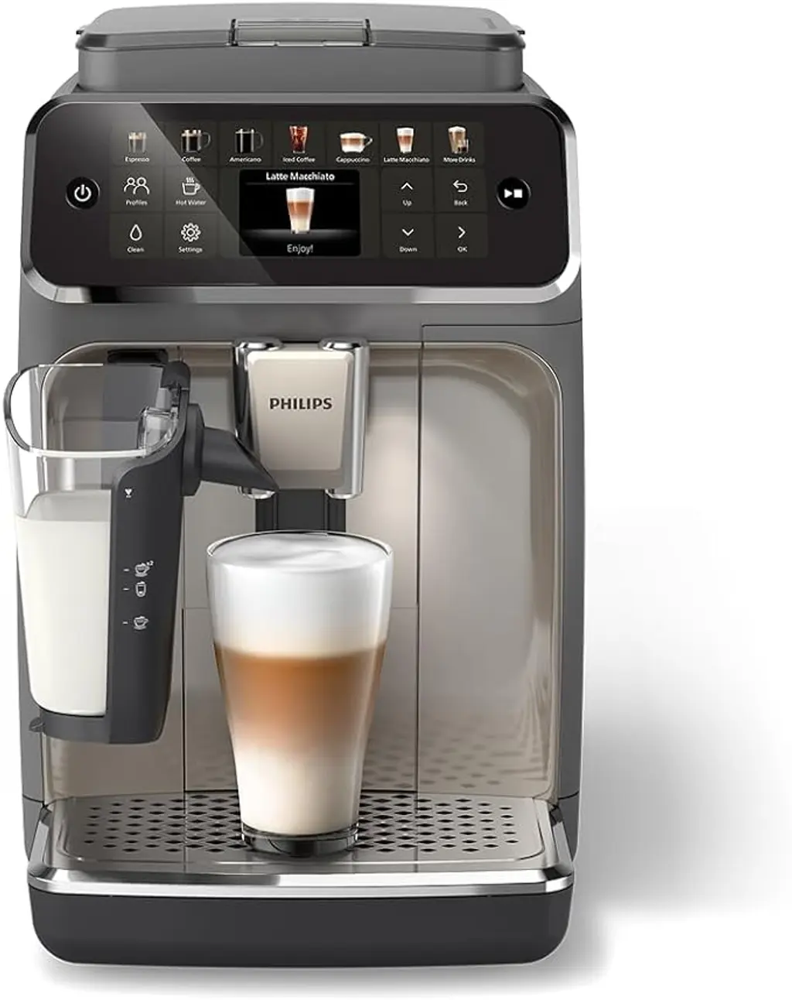
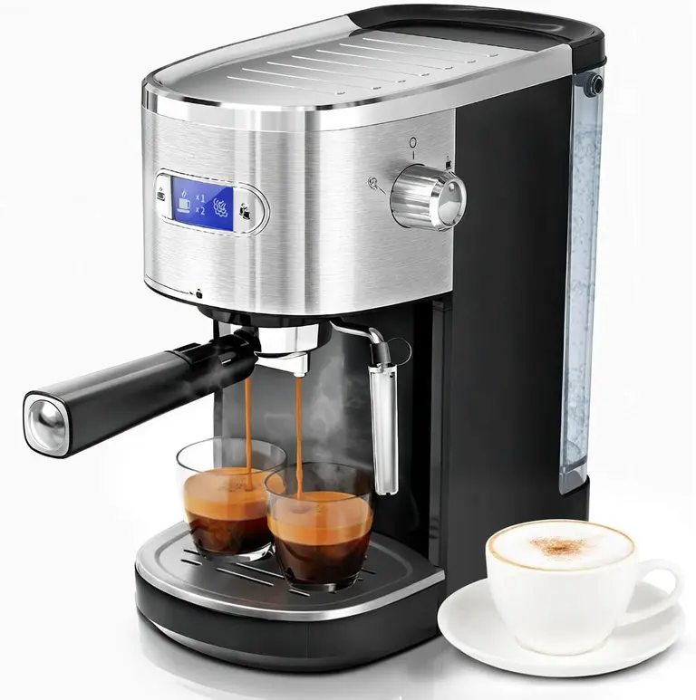
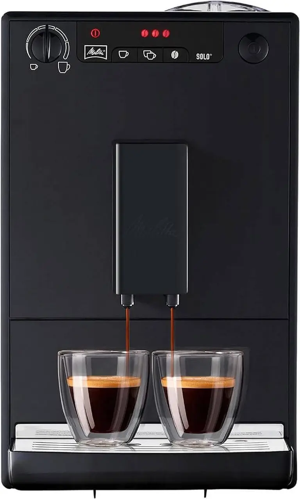

Blog Expert Cafetière – Tests et guides machines à café
📚 BASE DE DONNÉES CAFÉINE
Tous nos guides d'achat, tests approfondis et études de cas pour optimiser votre expérience café. Plus de 50 machines testées et analysées par nos experts.
Blog Quotidien

Avis Philips Série 5500 LatteGo : faut-il l'acheter ?
La Philips Série 5500 LatteGo est une machine à café automatique avec broyeur intégrée, conçue pour les amateurs de café qui veulent un large choix de boissons à la maison. Découvrez notre avis complet et honnête sur cette machine premium.

De'Longhi Dinamica Plus ECAM382.70.B — Test complet et verdict
La De'Longhi Dinamica Plus ECAM382.70.B est une machine automatique en grains avec LatteCrema Plus. Notre test complet couvre qualité du café, mousseur, entretien et meilleur rapport qualité/prix.
Articles Invités & Tests

Les 10 Meilleures Machines à Café pour les Amateurs en 2026
Découvrez notre sélection des 10 meilleures machines à café pour amateurs en 2026. Comparatifs, tests et conseils pour choisir la parfaite cafetière.

Comment Entretenir et Nettoyer Votre Machine à Café
Apprenez à entretenir et nettoyer votre machine à café avec nos astuces pratiques. Prolongez la durée de vie de votre cafetière et savourez un café parfait.

5 Erreurs à Éviter Lors de l'Achat d'une Machine à Café
Découvrez les 5 erreurs courantes à éviter lors de l'achat d'une machine à café. Conseils d'experts pour bien choisir votre cafetière.

Guide Mobile — Choisir une cafetière portable
Guide d'experts pour choisir la meilleure cafetière nomade. 4 profils d'usage, critères détaillés et recommandations personnalisées.
OutIn Nano — Test complet & verdict
Test terrain détaillé : design, autonomie, extraction, verdict complet. Mini-machine USB-C pour nomades exigeants.
🌟 Nouveaux Guides Comparatif 2026
Capsules vs Grains de Café
Analyse complète : qualité, prix, commodité et impact environnemental. Découvrez lequel choisir selon vos besoins.
Guide Espresso : Extraction Parfaite
Maîtrisez l'art de l'espresso. Extraction, température, tamping, techniques pro et 7 erreurs à éviter.
Automatiques vs Manuelles
Quel type de machine choisir ? Facilité, qualité, coûts. Tableau comparatif complet et recommandations personnalisées.